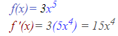
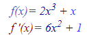
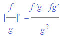

Formula de derivacion Basica
A continuación te mostraremos algunos ejemplos para que notes cómo se van desarrollando las reglas de derivación.
La derivada de una constante
Según lo que hemos descubierto anteriormente la derivada de una constante es cero. Veamos un ejemplo.
La derivada de una potencia entera positiva
Como ya sabemos, la derivada de xn es n xn-1, entonces:
Pero que sucede con funciones como f(x) = 7x5, aún no podemos derivar la función porque no sabemos cual es la regla para derivar ese tipo de expresiones.
La derivada de una constante por una función
Para derivar una constante por una función, es decir cf(x), su derivada es la constante por la derivada de la función, o cf'(x), por ejemplo:>
La derivada de una suma
Tampoco podemos diferenciar (o derivar) una suma de funciones. La regla para la derivada de una suma es (f+g)'=f'+g', es decir, la derivada de una suma de funciones es la suma de las derivadas de cada uno de los términos por separado. Entonces:
La derivada de un producto
Aún no hemos dicho cual es la regla para derivar un producto de funciones, la regla para la derivada de un producto es (fg)'= fg'+f'g. En español esto se interpreta como "la derivada de un producto de dos funciones es la primera, por la derivada de la segunda, más la segunda por la derivada de la primera".
Derivada de un cociente
Ahora daremos la regla para la derivada de un cociente.
Traducción: la derivada de un cociente de dos funciones es (la segunda, por la derivada de la primera, menos la primera por la derivada de la segunda) entre la segunda al cuadrado.

Las derivadas de las funciones trigonometricas
Ahora daremos las fórmulas para las derivadas de las funciones trigonométricas.
Ahora daremos el resto de las fórmulas para las derivadas de las funciones trigonométricas.

Regla de la cadena
Las reglas de derivación que hemos definido hasta ahora no permiten encontrar la derivada de una función compuesta como (3x + 5)4, a menos que desarrollemos el binomio y luego se apliquen las reglas ya conocidas. Observa el siguiente ejemplo.
Observa que después de factorizar la derivada, en cada caso se obtiene la misma función pero con el exponente disminuido en 1, multiplicada por un factor que es igual al producto del exponente original por la derivada de la función base.